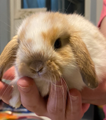

Fostering Ducklings & Bunnies


|
Fostering Ducklings Scroll down for Fostering Bunny informationJoy and giggles, laughter and squeals of delight. These are the typical reaction as families use our contact-free pick-up of just-hatched ducklings at our farm. Teachers love the low-stress having just-hatched ducklings without the wait. Woolley Wonderland Farm in Lakehurst, Ontario is the location for pick-ups and returns for this program. Perhaps you're a parent needing an idea for home learning with your students, or you are needing to help a tween or teen dealing with isolation. Fostering a pair or more of baby ducklings has become a phenomenon. We have been running this program for more than 10 years. With the returning ducks, comes stories of how caring for ducklings brings together science and nature studies, empathy and nurturing, socializing and imprinting, compassion, caring and love.
You will select from 2 or more incubator-hatched ducklings for your kit. We provide everything you will need for one, two, three or more weeks. When will I get my ducklings?
In the time of Covid-19, we have developed non-contact procedures to keep everyone safe. Our smooth pick-up and return process has no-direct contact between people. We are doing our part to be healthy and keep that curve FLAT. Use our on-line booking and you are now in the queue (What? Not booked yet? Quick! Click and get that done!).
Email notifications will be coming. First an order confirmation, followed by your pick up news. Watch your inbox and junk mail telling your hatched duckies are ready. Our ducks are usually Pekins; yellow-coloured as ducklings with tiny peeps growing into white ducks with orange beaks and legs. New for 2021: You can now reserve the miniature Call Ducks in April to June. Additional dates will be added as eggs go into the hatchery. These start smaller, grow slower and stay smaller than a standard duck. They will fly at 8 to 10 weeks old, if you plan to keep them a while. With our own eggs, you may get standard sized ducks in different colours and shapes from the long necked Indian Runners, ducks with tufts on top or all black Cayugas. We don’t foster baby chickens (chicks) as they will develop the wings early and begin to flutter and fly at 10 days old. Ducklings will stay on the ground, swim and bond with you. They also will adapt back to being a farm duck when they are returned to the farm. And return they must. To prepare for duckling pickup: You will need a plastic bin / tote or rabbit cage. You can find something larger if/when they outgrow your first choice. Provide a safe draft-free area, away from pets. They must live inside for the first while with short trips outside on nice sunny days or rainy ducky days of spring and summer. No matter if they are on land or in water, ducks must always be supervised by a responsible person. We suggest a heat lamp or a desk lamp with an old-fashioned incandescent bulb for warmth. Don't have one? We have heat lamps, totes and cages for rent with your kit for an additional fee. We suggest a heat lamp or a desk lamp with an old-fashioned incandescent bulb for warmth. Don't have one? We have limited quantities of heat lamps and cages for rent with your kit for an additional fee. |
|||
We provide you with all you need: Your duck kit includes: a pair or more just-hatched baby ducklings, food + food dish, water dish, vitamin supplement, shavings for bedding and our comprehensive manual. We also have totes, cages and heat lamps for rent if you are in need of these items. The ducks will double in size over the first week and again in the second week. Honestly! They start out smaller than your closed fist, and grow to the size of a mini-football in less than three weeks.No worries about missing their mama. Ducks are hatched by incubator and may imprint on their foster parents following you around. Did you know that ducklings swim by instinct the day they hatch and that they love scrambled eggs for breakfast? |
|||
|
When you're done... 
Keep the ducklings as long as it works for you: 2 weeks - 3 months ... or anything in-between. They must be returned to the farm to wrap-up your program. You are done when the duckies are too big, too loud or too smelly for you. Click here for info with our Foster Duckling FAQ. We are a livestock farm and sell many of our breeding animals to other farms. Please click here to make a booking. We will do our best to accommodate you as quickly as possible. Winter ducklings hatch twice month on Thursday mornings. Your pick up time will be by appointment that afternoon or through the weekend. Spring and summer have additional hatch dates every week. Hatching Eggs at your home or school is fun too! You can book a complete incubator kit. Click on the Hatching page for more information.  Senior Programs with Duckies Woolley Wonderland Farm is so missing all our Retirement Clients. We know it's hard to be so isolated in these weeks. Our hearts are with you. When it's time, we know the lifestyle director will be calling us to book all the great programs including the Fostering of Duckies.
Senior Programs with Duckies Woolley Wonderland Farm is so missing all our Retirement Clients. We know it's hard to be so isolated in these weeks. Our hearts are with you. When it's time, we know the lifestyle director will be calling us to book all the great programs including the Fostering of Duckies.When you are ready, we are ready. We can offer non-contact drop-off & returns to your location. Keep in touch! Be Well, Be Safe! In the meanwhile, you can ZOOM with us! Click here for information on how we can visit with you virtually. THANK YOU to all the staff at each and every retirement home, seniors homes and special places for kiddos and adults with special needs. You are amazing. | |||
|
Foster Bunnies Covid has many families scrambling to own a pet. We thought it wise to offer a program to let you test the waters first. Pets are a long-term commitment, with some rabbits living more than 15 years. For those who think a rabbit is a great idea but don't know what it's like to own one, we have a solution.Critter Visits is offering several breeds of rabbits for fostering before you adopt! Let your family see if this is the right pet for right now with a month's trial with your family's current routine. Will the kiddos change the litter? Play daily? Brush the Fur? Feed and fill the water bottle? Does it get enough attention after three weeks? If after a month you are not sure, you can extend for one more month before you decide. Often, a family knows the answer before the month is over.  We supply you with a cage, shavings for the bottom, a litter pan (they are litter trained), water bottle, food dish and hay rack. You also get a bucket of pellet food and a bag of hay plus our manual with basic tips. None of our bunnies are fixed. Your family can come to the farm and select a buck or doe, the colour they like and the breed they were hoping for. We will assist in taking the bunny out of the cage and letting you hold one or two. We want to be sure it is a good fit and you are comfortable holding and picking up your new furry friend. We are a call away during your foster period to help you with any questions. Remember that bunnies have claws (we will trim them after you select your bunny) and can nip. Their bones are small so gentle but firm hands are required. They must have their back feet supported for proper holding. Our Introduction to Rabbits manual will help you with the basics. | |||
|
We can deliver to your home for a travel fee of $1.15 per km from our farm in Lakehurst plus applicable tolls and taxes. Remember you won't have the opportunity to select in person and see if the fit is perfect. Each person has a different relationship with a bunny and we can bring the bunny you pick out by photo. | |||
|
Our current breeds are: Lionhead, Mini Rex (the velveteen bunny), Holland Lop and smooth short-coat bunnies. Ages are from a few months and up to 2 years old. Colours include broken back (spotted), otter (light on bottom and dark on top), harlequin (like a calico cat tri coloured), black, white, brown and lavender (grey). You will be able to select from our complete group when you come to the farm by appointment. Fees: Foster prices are $175 for one bunny or $225 for two bunnies for up to one month. A second month extension is $75 per bunny. Buy-out of bunnies start at $100. While we offer fostering and purchase opportunities all year around, we do not allow the purchase of bunnies for the holidays of Christmas and Easter . We want to be sure that they don't end up in a shelter from an impulse purchase. Book online and we can work to set an appointment that works for you at our farm. |